Project 06 · Footwear · SPD 686
Lotus I
A cushioning midsole borrowed from the lotus flower. Layered E-TPU petals sit under a 3D-printed Pebax web, so impact spreads out and the foot stays stable.
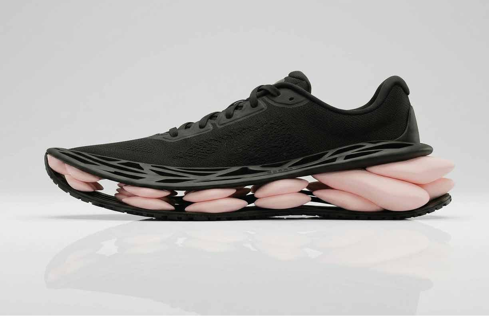
- Role
- Biomimicry research, sketching, CAD, drawings
- Duration
- 2 weeks
- Inspiration
- Lotus flower: petal layering, radial geometry, mesophyll
- Length
- 329.79 mm (1:2 drawing)
- Top layer
- Pebax web (TPE), 3D printed
- Cushioning
- E-TPU petals, compression molded
- Modeling
- Rhino SubD petals + NURBS web
- Render
- Vizcom
Biomimicry
How a flower handles load.
Petal mesophyll
A spongy, porous tissue full of air spaces. The cells buckle to absorb energy, the air gaps compress first to dissipate force, and the cell walls stop it collapsing completely.
Radial geometry
Flowers spread load evenly with structures that radiate from a center, which gives force more than one path.
Petal layering
Overlapping layers of different stiffness: outer petals flex more, inner petals are denser. A built-in hierarchy.
How might we design a midsole that uses layered, petal-like structures to distribute impact and create a soft, stable underfoot experience?
Goal
A soft, stable midsole that spreads impact out.
Approach
Layered E-TPU petals in a radial layout under a 3D-printed Pebax web, modeled in Rhino SubD.
Result
Sketches, a 1:2 technical drawing, the CAD model and a render of Lotus I.
Sketches
Petal forms, foams and a web on top.
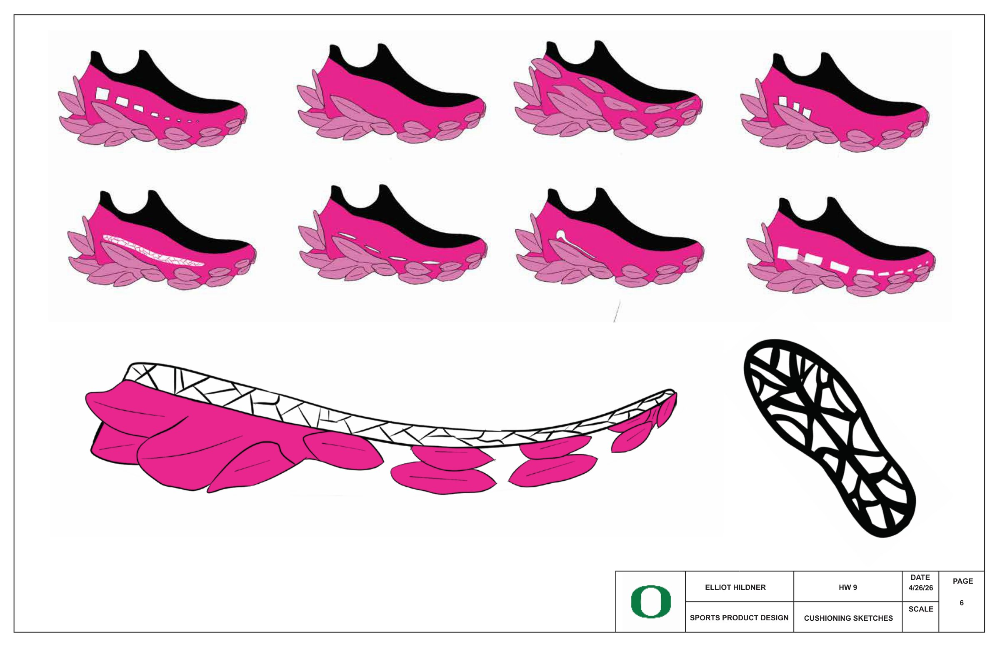
CAD & Drawing
SubD petals under a NURBS web, documented at 1:2.
The 3D model is the petal layout from my working Rhino file. The final drawing below adds radial petal clusters under the forefoot and heel.
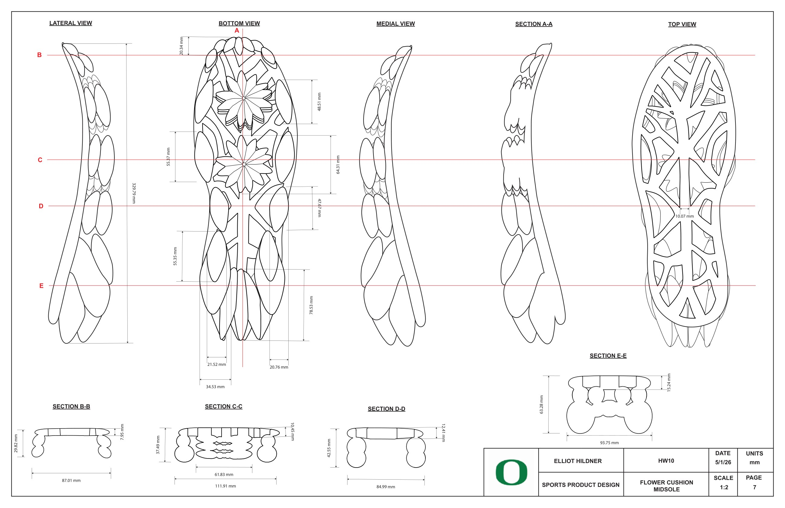
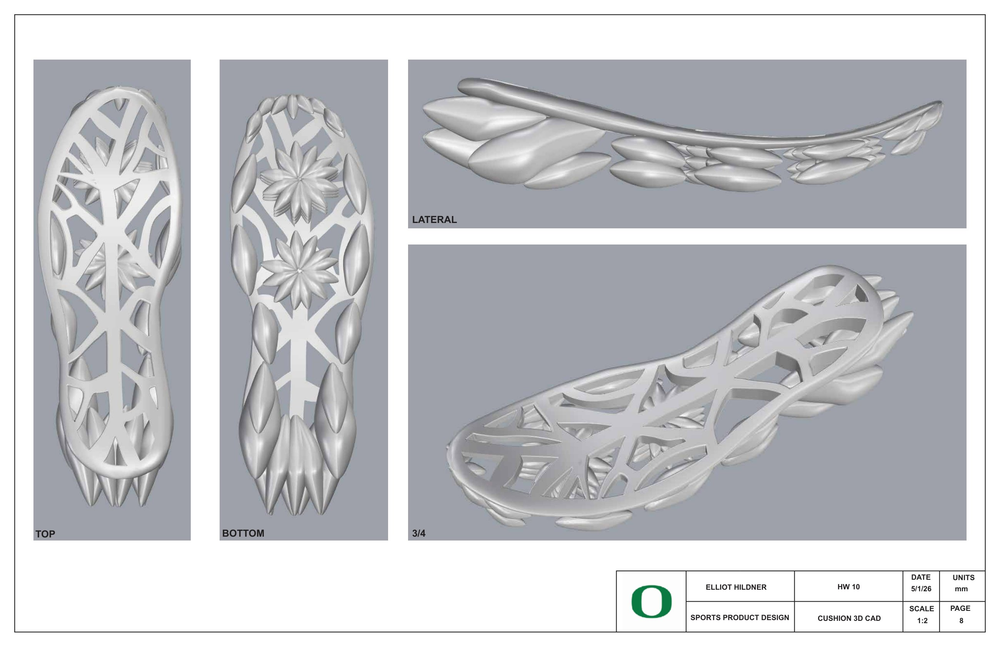
Materials & Final
Two materials, two jobs.
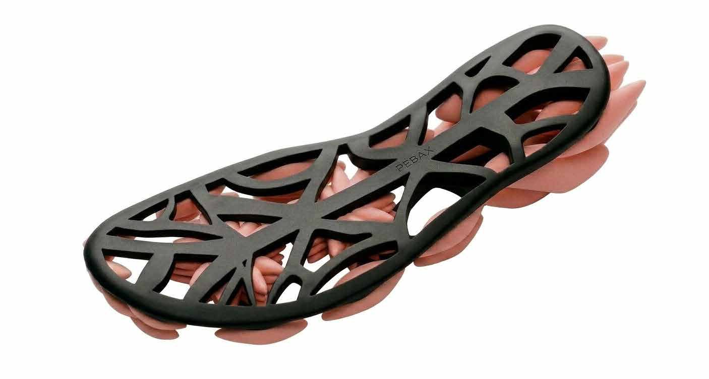
- Pebax webA thermoplastic elastomer, 3D printed. The top layer adds flexibility and support and holds the petals in place.
- E-TPU petalsTPU pellets expanded into a lightweight foam, then compression molded into layered petals.
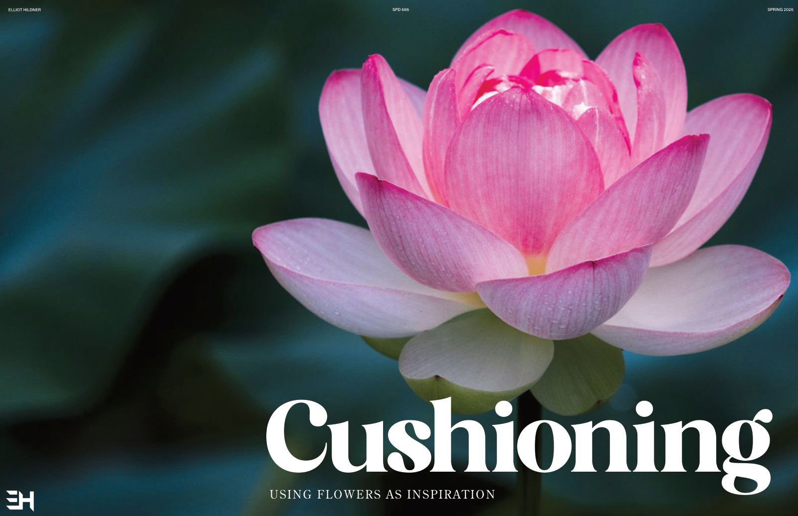
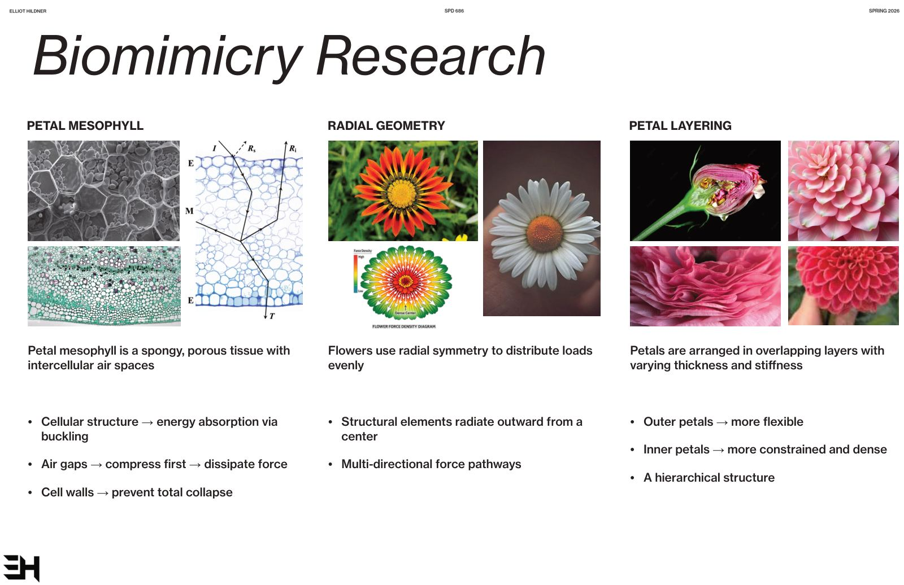
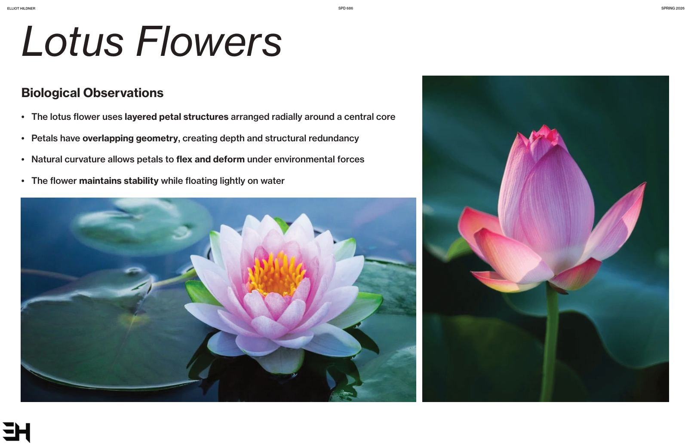
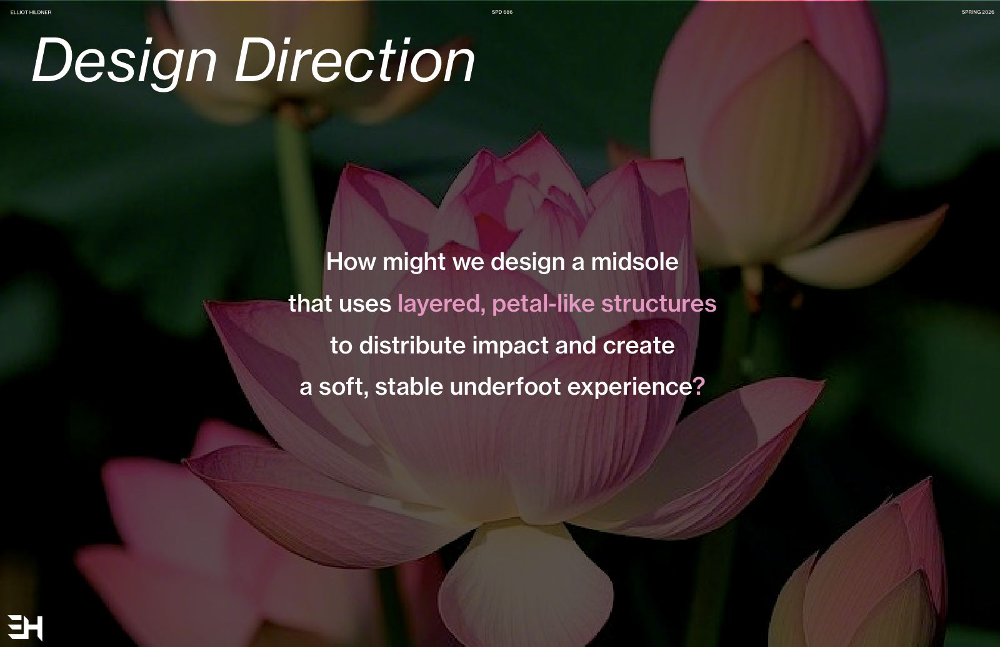
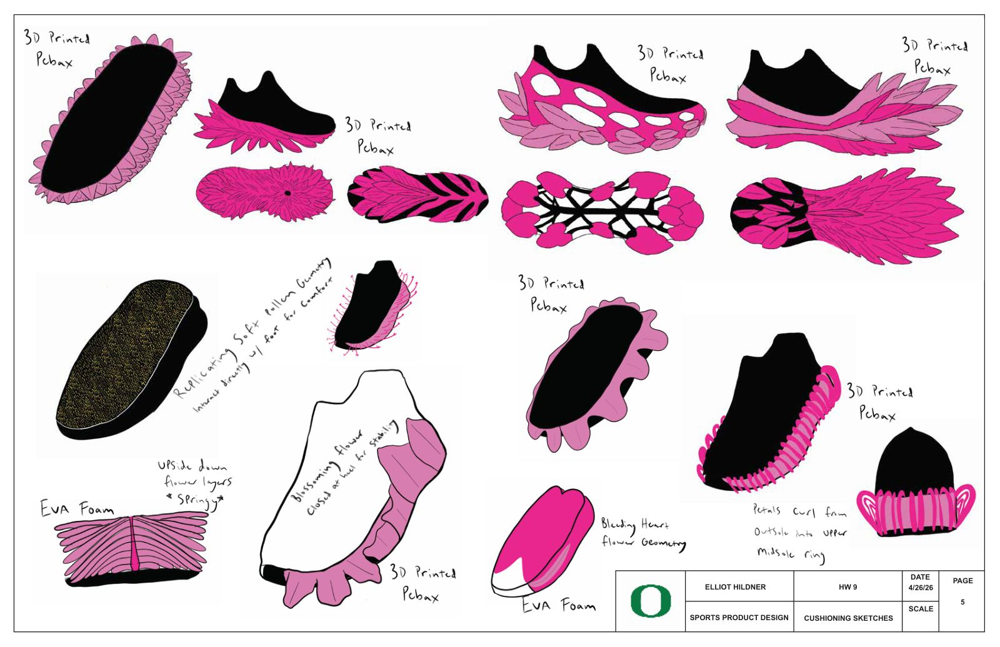
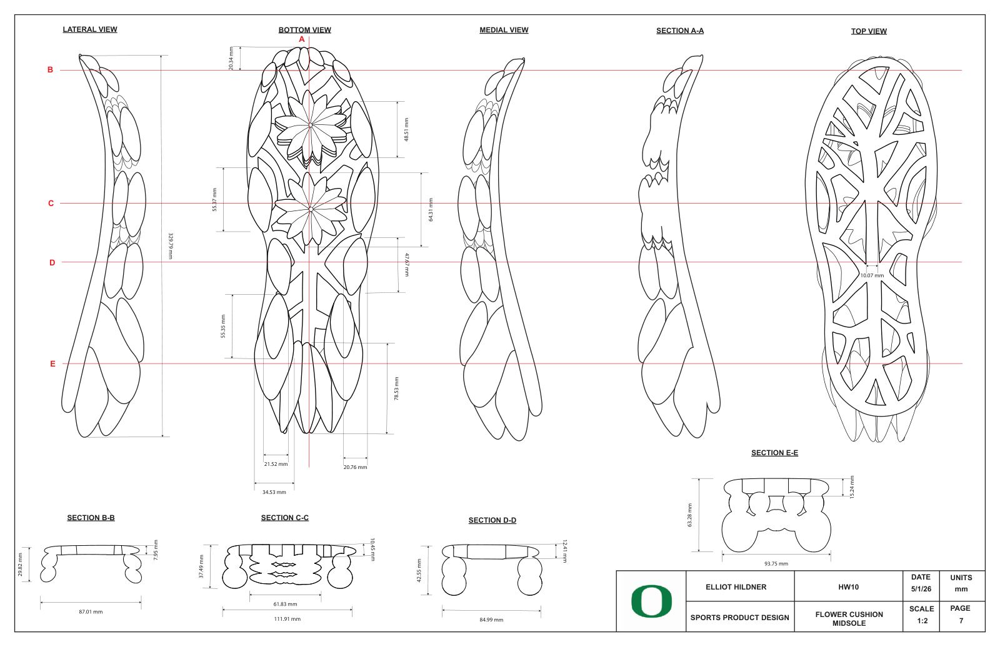
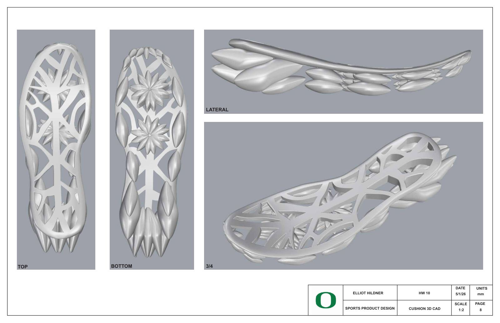
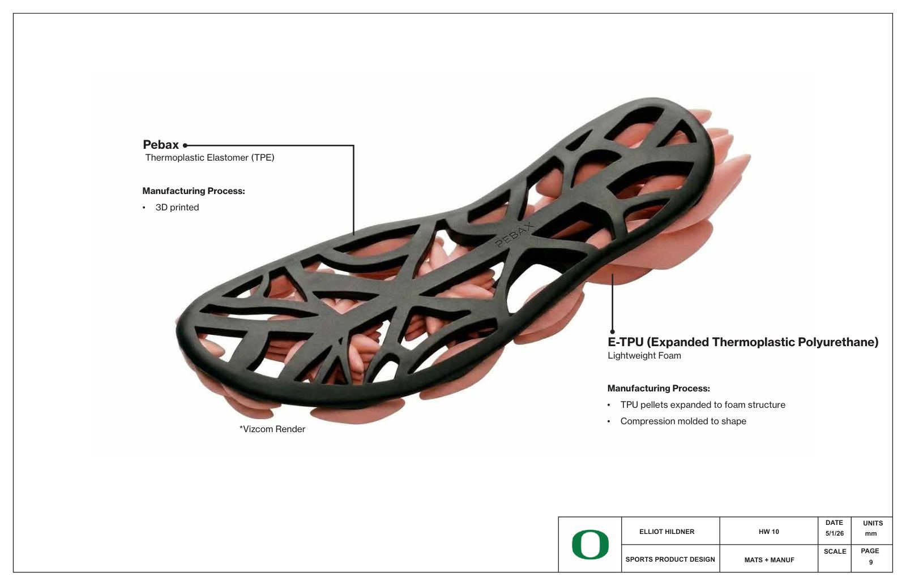
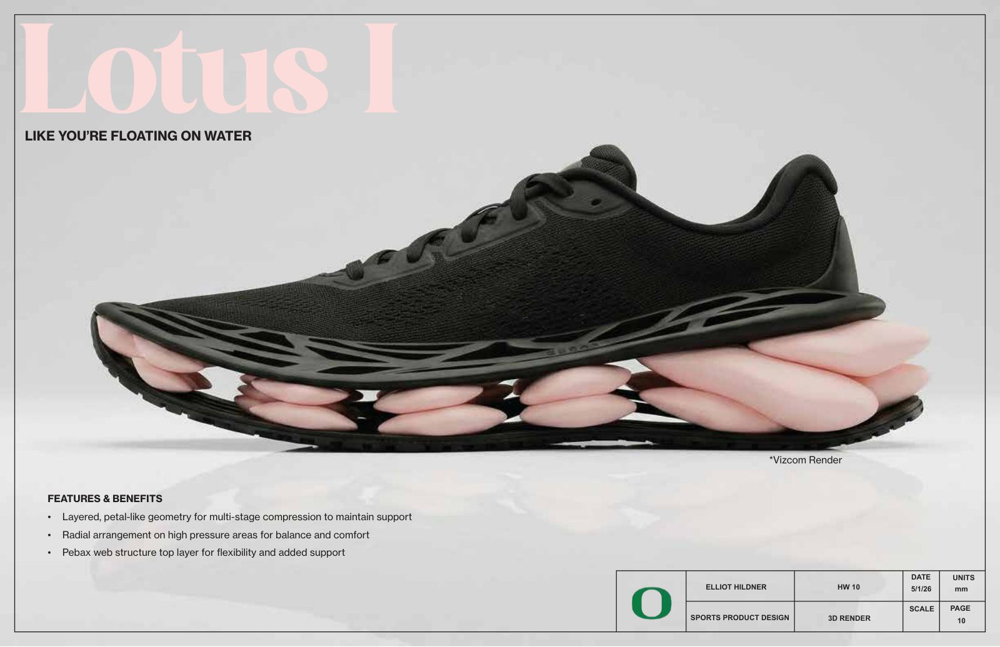
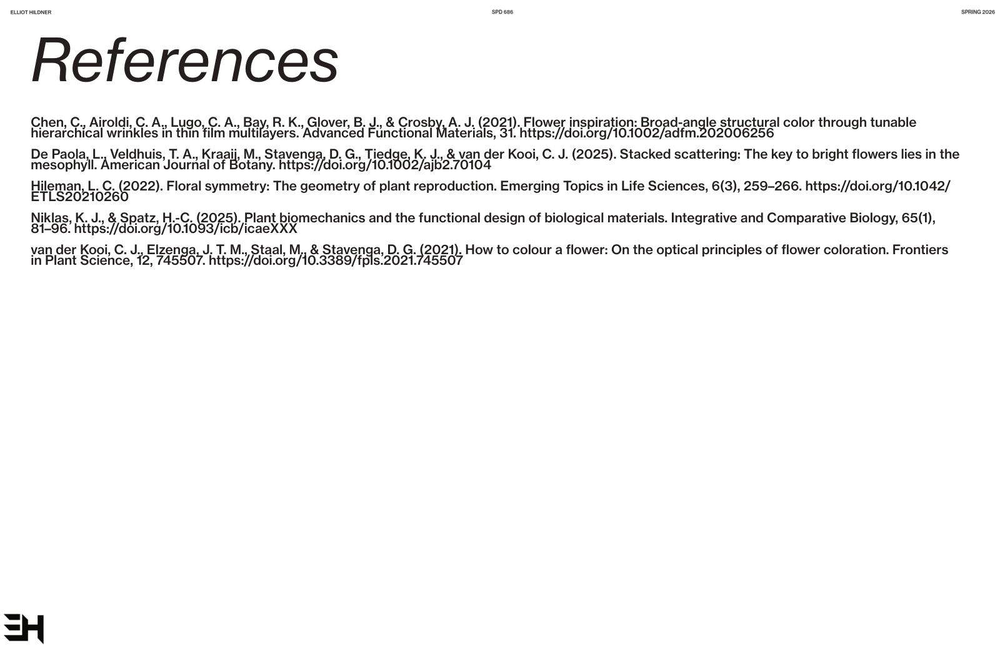